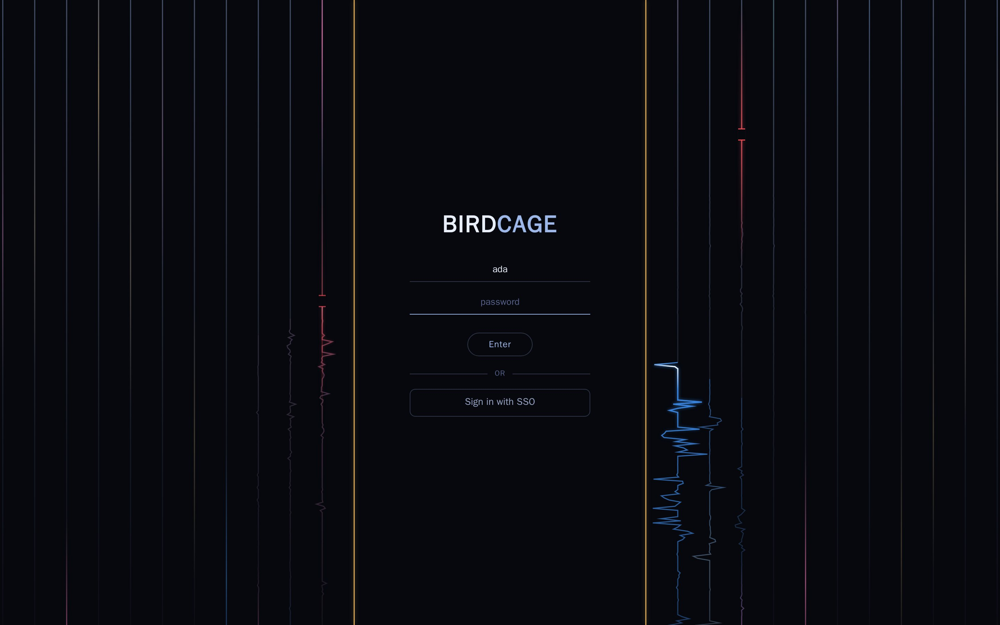
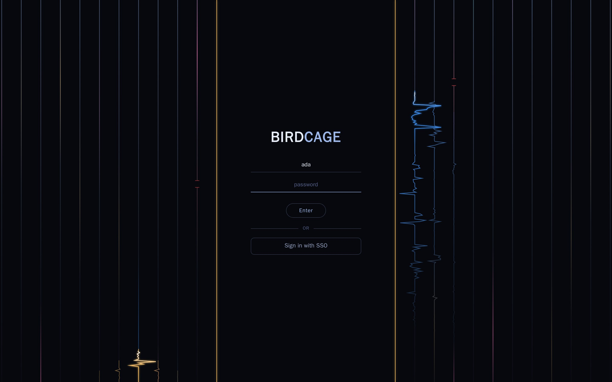
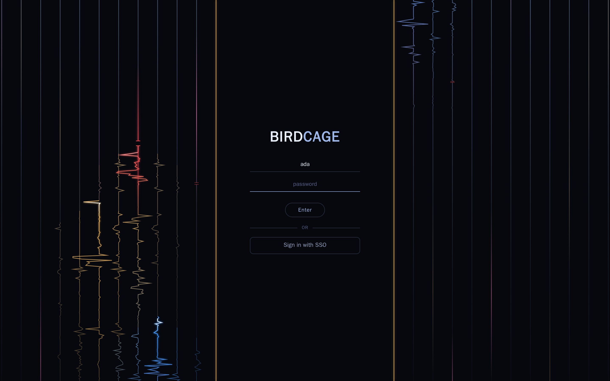
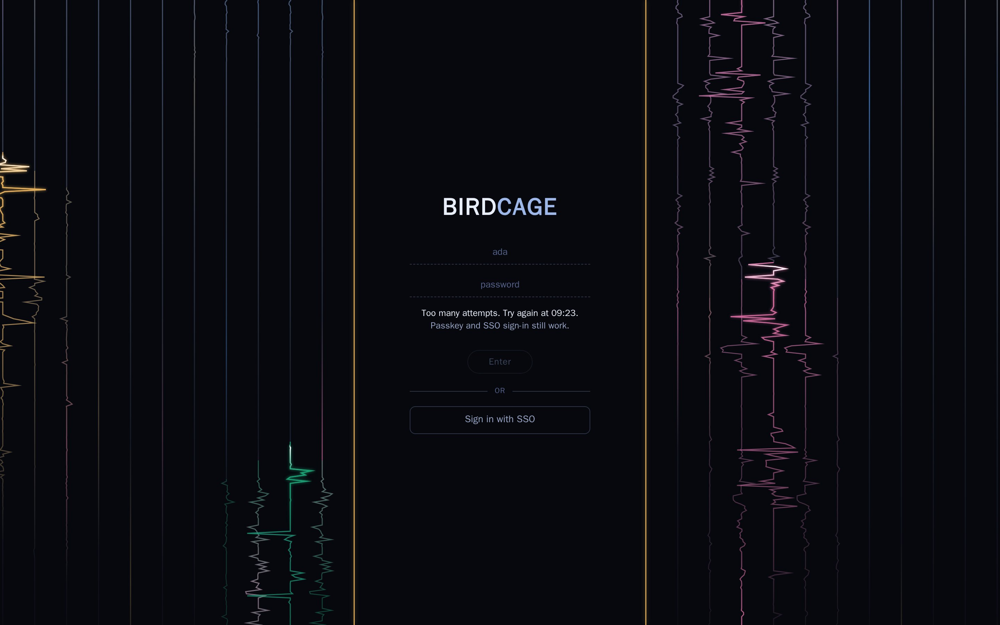
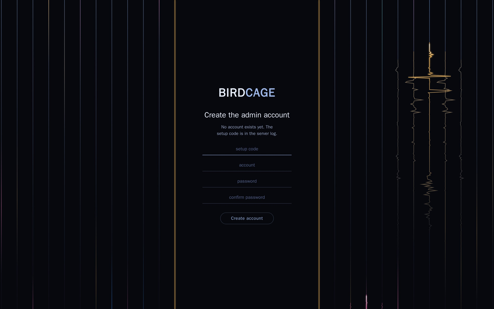
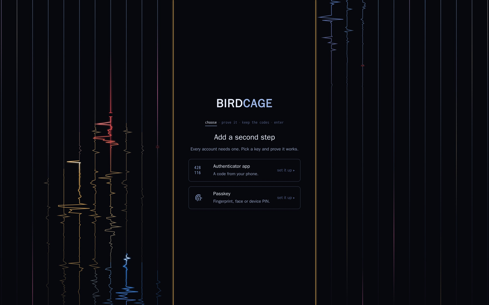
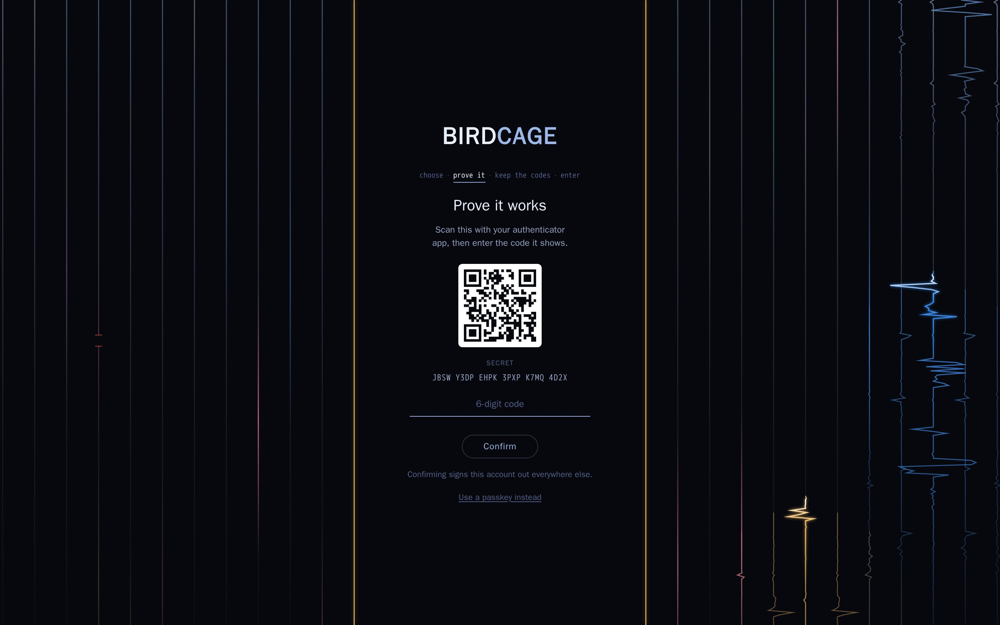
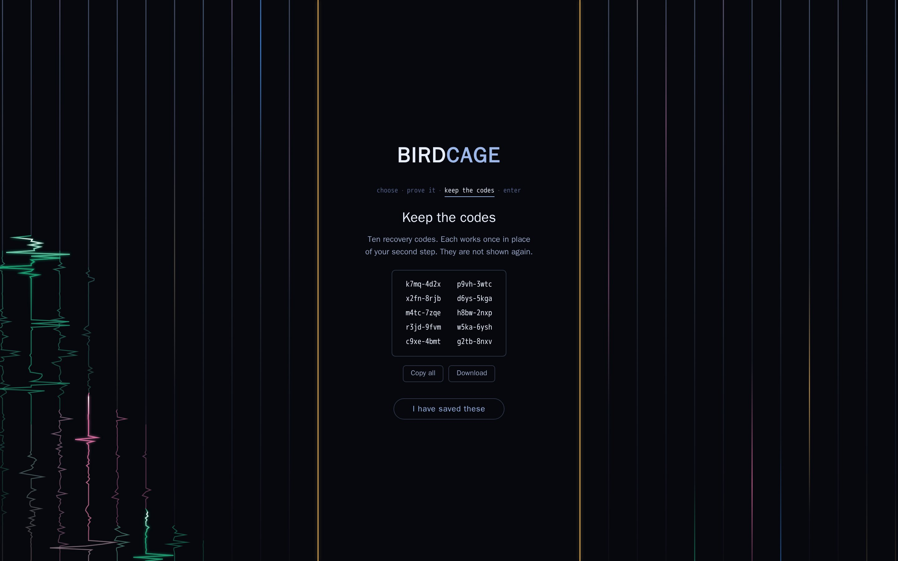
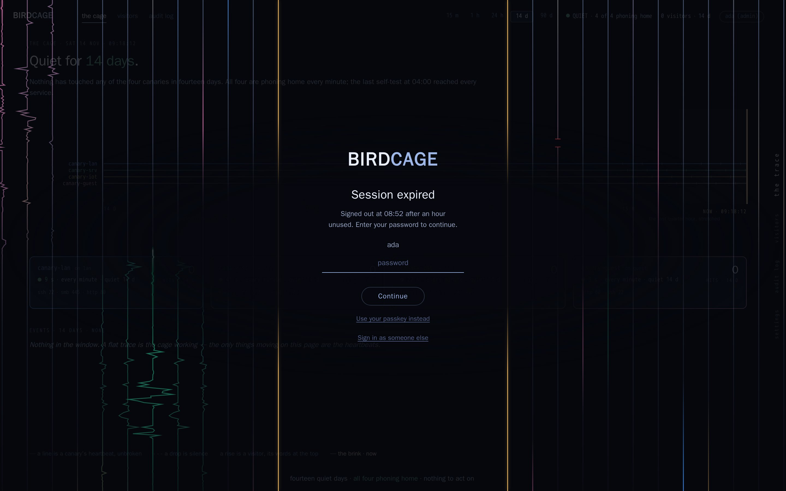

Two things. First, some pulses are now caught: about one in four stops part-way up, the bar is cut there and beats red, then mends and goes back to normal. Second, the remaining screens are drawn on the same door. Open the live page; the links along the bottom left step through every screen.
Wording and layout follow mikroview's screens, shortened.
Open the live page







